Planning Context
어떤 기획이었나
- 시스템 콘텐츠는 진입 조건, 진행 상태, 보상, 알림, 예외 케이스가 서로 얽혀 있어 화면 단위로만 보면 정책 누락이 발생하기 쉽습니다.
- 개별 기획자가 기능을 나누어 담당하면 UX 기준이 흔들릴 수 있어, 공통 판단 기준과 컨펌 포인트가 필요했습니다.
ProjectN · UX Ownership
ProjectN의 주요 시스템/콘텐츠 UX를 폭넓게 담당하고, 이후 개별 기획자가 기능을 맡는 구조에서는 UX 스크립트와 시안 컨펌을 수행한 작업 범위입니다.

Planning Context
Process
Deliverables
Result
콘텐츠 단위의 UX 기준을 유지하면서 개별 기능 담당자가 작성한 문서와 시안을 같은 품질 기준으로 맞추는 역할을 수행했습니다.
Deliverable Captures
원본 문서는 포함하지 않고, 포트폴리오 확인용으로 일부 페이지만 이미지화했습니다. 슬라이드 마스터/상하단 영역은 흐림 처리했습니다.
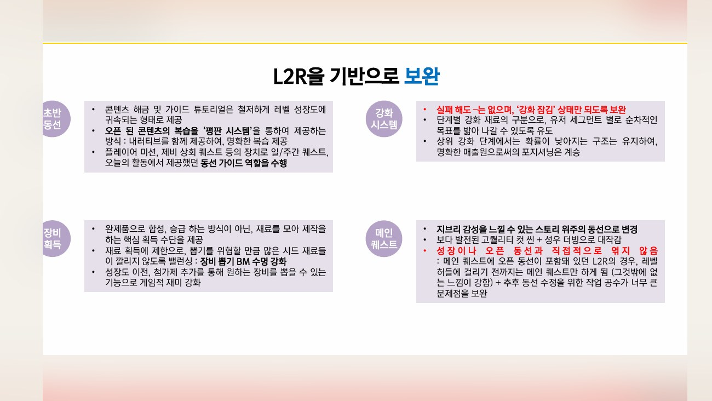
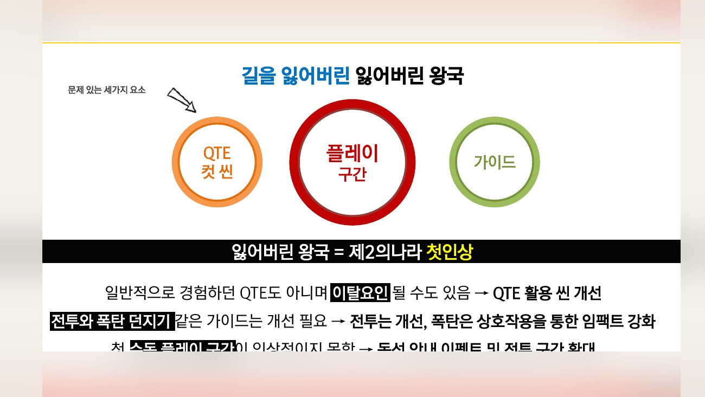
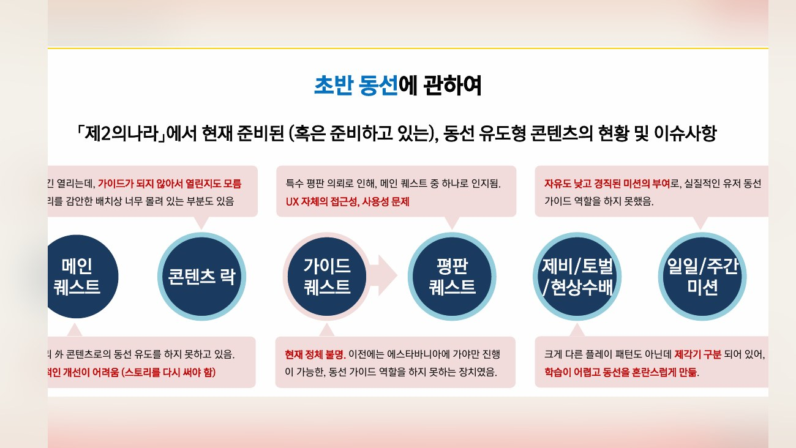
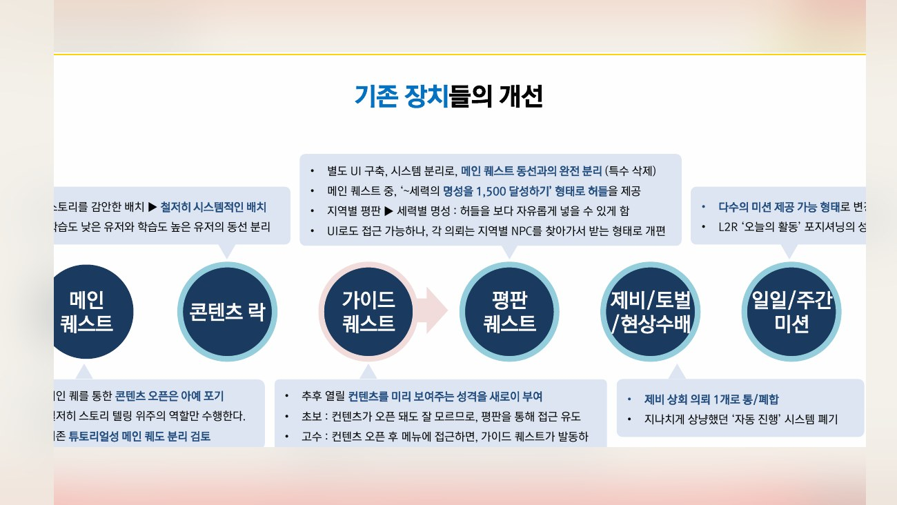
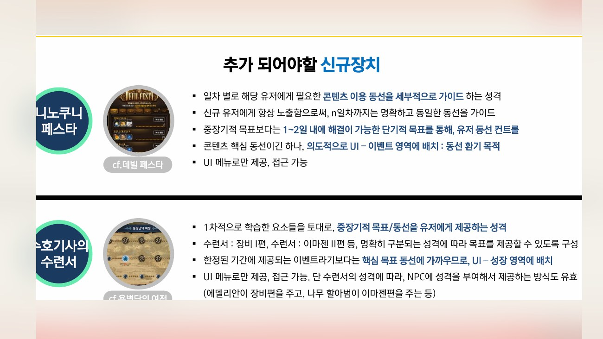
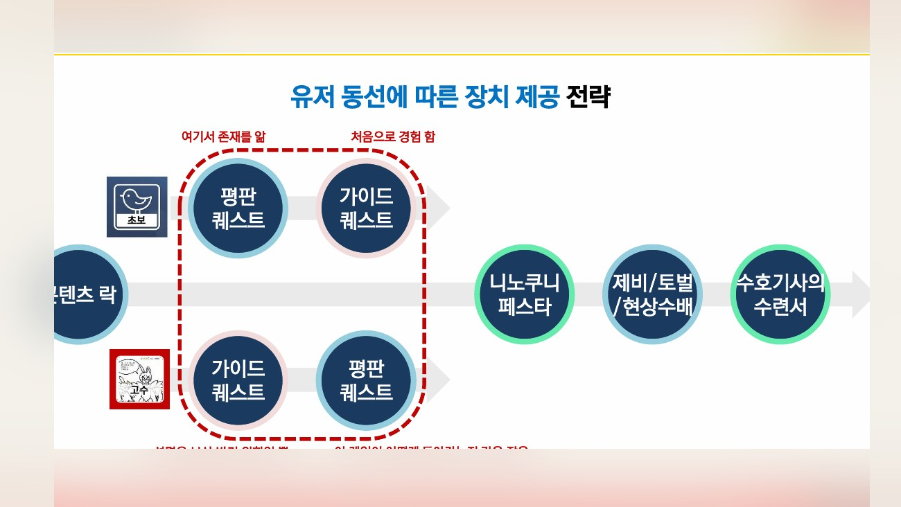
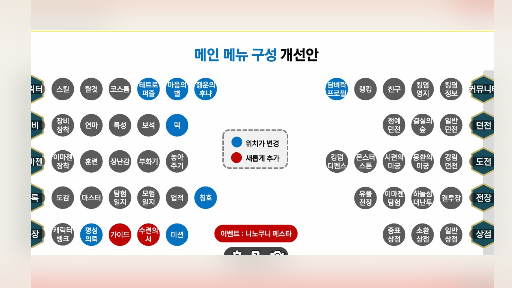
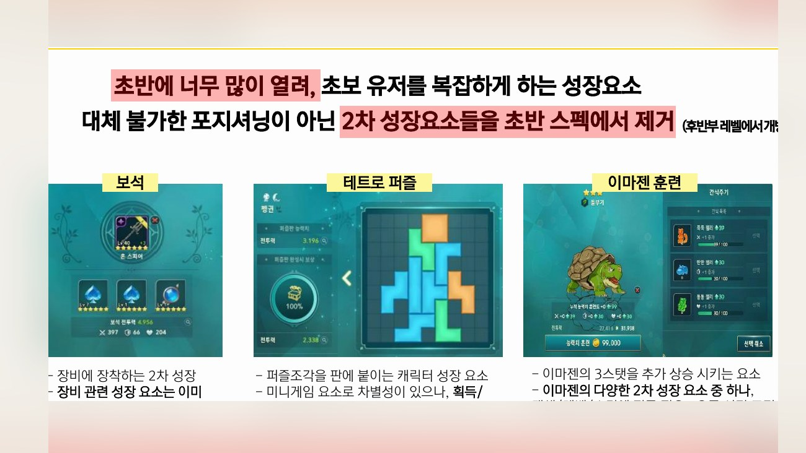
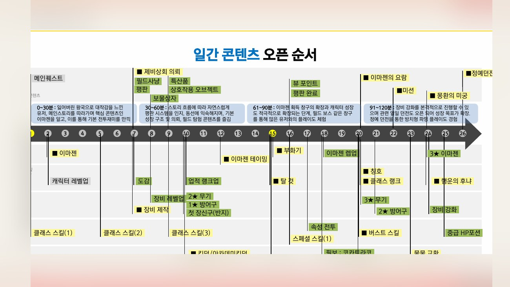
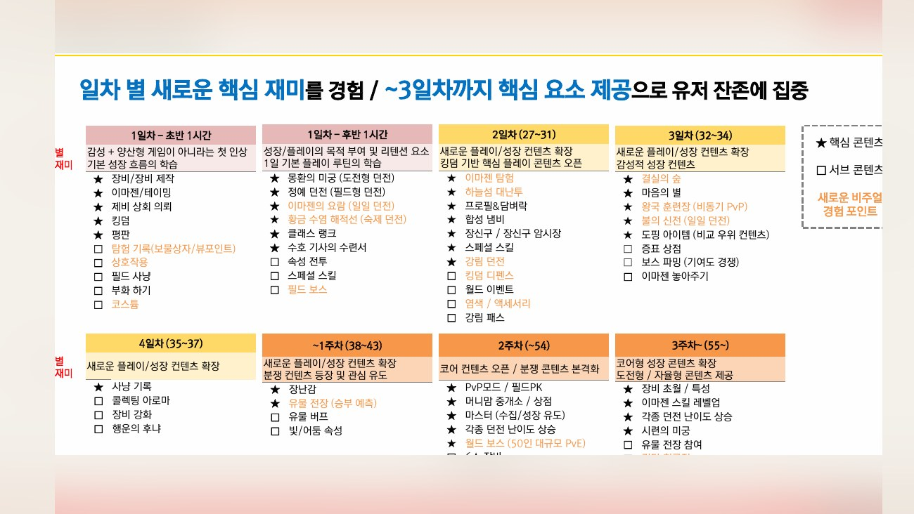
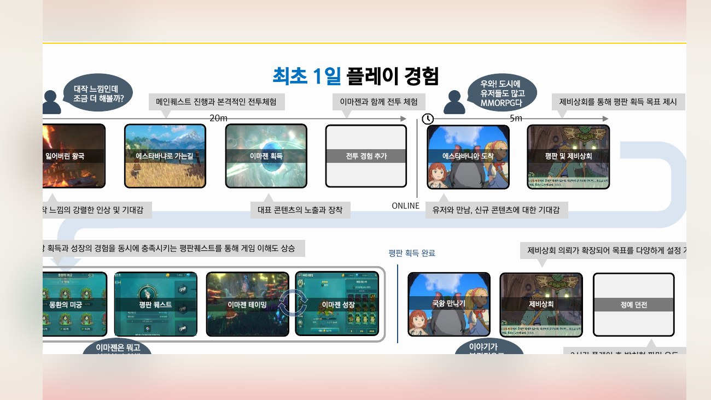
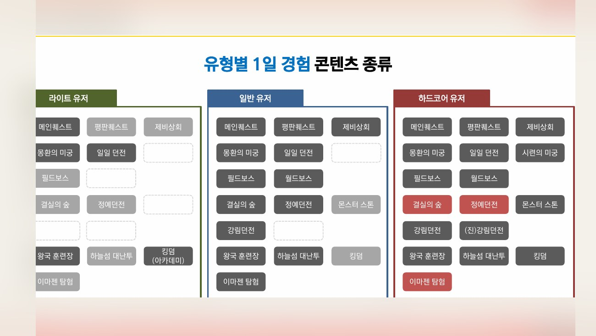